vignettes/10-expressionHeatmap2.Rmd
10-expressionHeatmap2.RmdLast updated: 2022-02-11
expressionHeatmap2()
expressionHeatmap2() takes a list of data frame with expression data for many genes and samples and draws a ggplot2-based heatmap. It also allows to cluster both rows (genes) and columns (samples), as well as scaling (scale()) by rows and columns (or both).
As input, expressionHeatmap() takes a named list of data frames with expression data (i.e. log2FoldChange). Each data frame in the list corresponds to a condition, the first column -named Geneid- must have the gene names and the column with the values to be plotted must be named log2FoldChange (it can be another data than log2FoldChange, but the name is maintained because it is easier to plot log2FoldChange values coming from DESeq2).
# read the deg data frames into a list
degs_all <- list.files("../testdata", "diff", full.names = T, recursive = T) %>%
purrr::map(~read.delim(.x)) %>%
purrr::set_names(c("Cond1", "Cond2", "Cond3"))
degs_all %>% purrr::map(~head(.x))## $Cond1
## Geneid ENSEMBL log2FoldChange padj DEG
## 1 Gsdmc2 ENSMUSG00000056293.12 2.69 9.334654e-29 Upregulated
## 2 Gsdmc4 ENSMUSG00000055748.12 2.66 1.060432e-28 Upregulated
## 3 Car4 ENSMUSG00000000805.18 2.11 1.883150e-25 Upregulated
## 4 Duoxa2 ENSMUSG00000027225.7 2.97 2.097922e-22 Upregulated
## 5 Neat1 ENSMUSG00000092274.3 -2.25 2.097922e-22 Downregulated
## 6 Gsdmc3 ENSMUSG00000055827.13 2.51 9.601422e-20 Upregulated
##
## $Cond2
## Geneid ENSEMBL log2FoldChange padj DEG
## 1 Gsdmc2 ENSMUSG00000056293.12 3.02 1.354254e-36 Upregulated
## 2 Cbr3 ENSMUSG00000022947.8 4.51 2.550986e-32 Upregulated
## 3 Gsdmc4 ENSMUSG00000055748.12 2.76 3.951881e-31 Upregulated
## 4 Gsta3 ENSMUSG00000025934.15 2.98 1.517936e-28 Upregulated
## 5 Hck ENSMUSG00000003283.14 2.69 1.517936e-28 Upregulated
## 6 Gsdmc3 ENSMUSG00000055827.13 2.91 1.773597e-27 Upregulated
##
## $Cond3
## Geneid ENSEMBL log2FoldChange padj DEG
## 1 Ada ENSMUSG00000017697.3 2.95 4.766663e-46 Upregulated
## 2 Cyp2d34 ENSMUSG00000094559.2 8.18 5.998138e-43 Upregulated
## 3 Gm9625 ENSMUSG00000097906.1 4.59 1.567834e-42 Upregulated
## 4 H2-Aa ENSMUSG00000036594.15 2.70 1.567834e-42 Upregulated
## 5 Fut2 ENSMUSG00000055978.5 3.79 1.108310e-30 Upregulated
## 6 Gm8730 ENSMUSG00000063696.7 3.16 1.849086e-30 UpregulatedTo select the genes, the names written in the genes arguments must be present in the Geneid column of the input data.
expressionHeatmap2(degs_all, genes = c("Lef1", "Jun", "Car4", "Yap1"))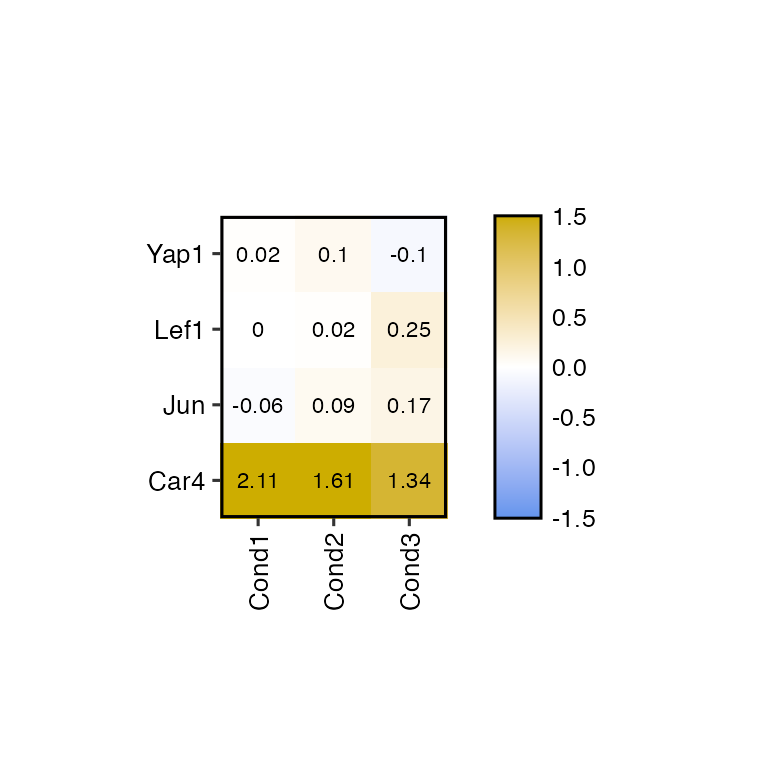
Setting the arguments clust_rows and clust_cols to TRUE, hierarchical clustering can be performed on both, rows and columns.
expressionHeatmap2(degs_all, genes = c("Lef1", "Jun", "Car4", "Yap1"),
legend_scale = c(-3,3),
clust_rows = T, clust_cols = T)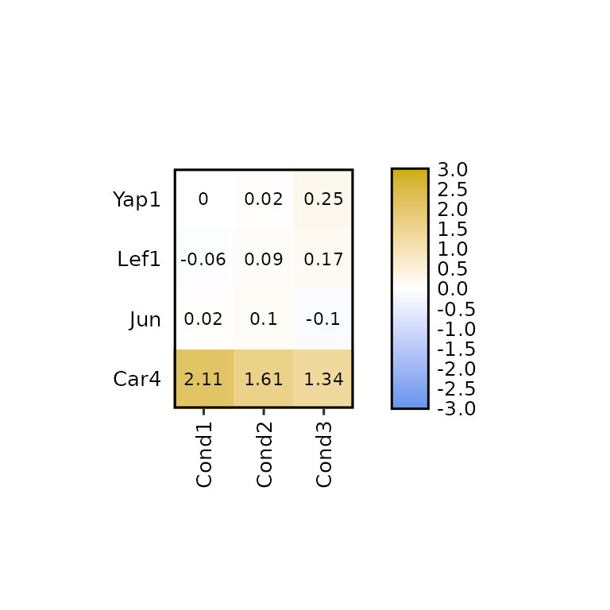
By default, the distance calculation method is euclidean and the clustering is ward.D: hclust(dist(data, method = "euclidean"), method = "ward.D"). If another method has to be used, the dist_method and hclust_method arguments should be set to the corresponding value, passed through the functions dist() and hclust(), respectively.
Available values for dist_method can be found in the dist() function documentation and available values for hclust_method can be found in the hclust() function documnetation.
expressionHeatmap2(degs_all, genes = c("Lef1", "Jun", "Car4", "Yap1"),
legend_scale = c(-3,3),
clust_rows = T, clust_cols = T,
dist_method = "manhattan", hclust_method = "median")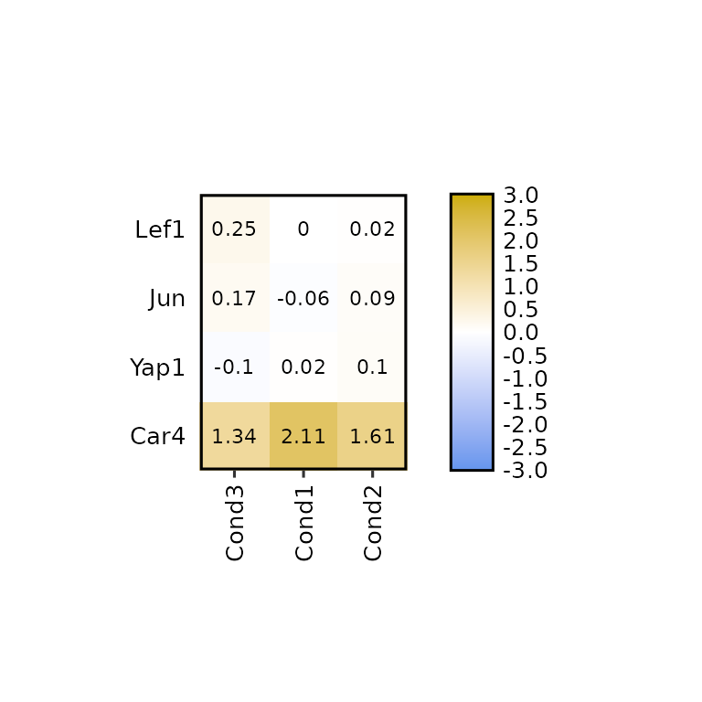
expressionHeatmap2() allows to plot the dendograms for the rows and the columns by setting the arguments show_dend_rows and show_dend_cols to TRUE, respectively.
The dendograms are drawn with the function plotDendogram(), which takes the output of the hclust() function inside expressionHeatmap2() as input. Then, using the pathcwork package, the dendograms are attached to the main heatmap. Note that if the row dendogram is plotted (show_dend_rows = T), the Y axis is moved to the right.
expressionHeatmap2(degs_all, genes = c("Lef1", "Jun", "Car4", "Yap1"),
legend_scale = c(-3,3),
clust_rows = T, clust_cols = T,
show_dend_rows = T, show_dend_cols = T)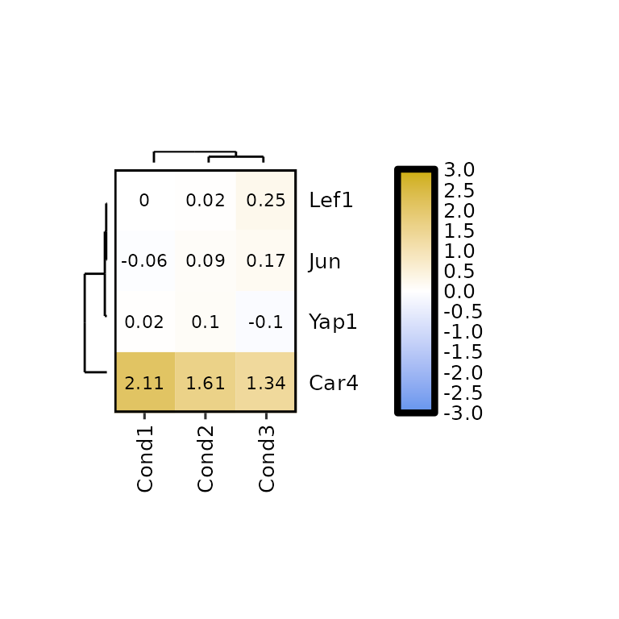
The size of the dendograms can be changed by setting their proportion to the height of the heatmap -for the column dendogram- or to its width -for the row dendogram-. To do so, the arguments dend_rows_prop and dend_cols_prop must be set to a value between 0 and 1.
expressionHeatmap2(degs_all, genes = c("Lef1", "Jun", "Car4", "Yap1"),
legend_scale = c(-3,3),
clust_rows = T, clust_cols = T,
show_dend_rows = T, show_dend_cols = T,
dend_rows_prop = 0.5, dend_cols_prop = 0.5)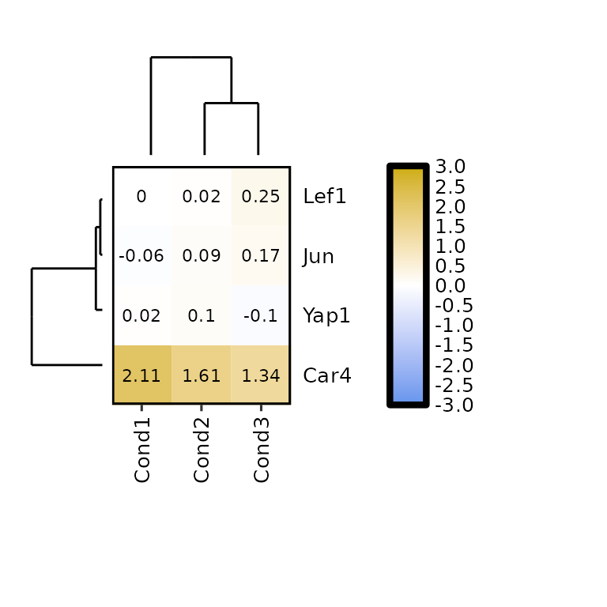
expressionHeatmap2() allows the scaling of the data by rows and columns by calling the function scale(). To do so, the scale argument must be set to either "rows" -to scale by rows- or "cols" -to scale by columns-. It can also be both c("rows", "cols").
expressionHeatmap2(degs_all, genes = c("Lef1", "Jun", "Car4", "Yap1"), scale = "rows")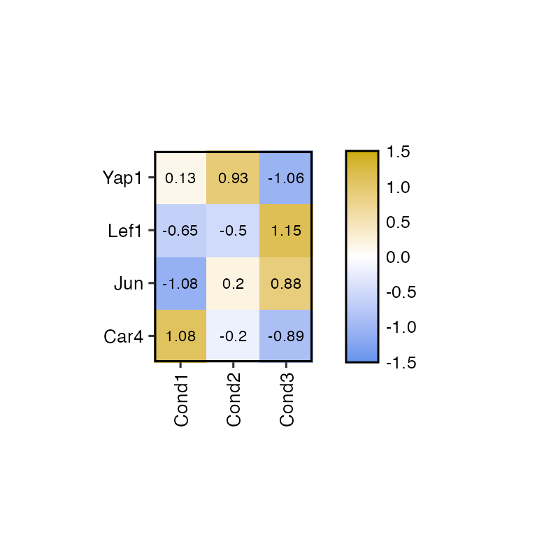
expressionHeatmap2(degs_all, genes = c("Lef1", "Jun", "Car4", "Yap1"), scale = "cols")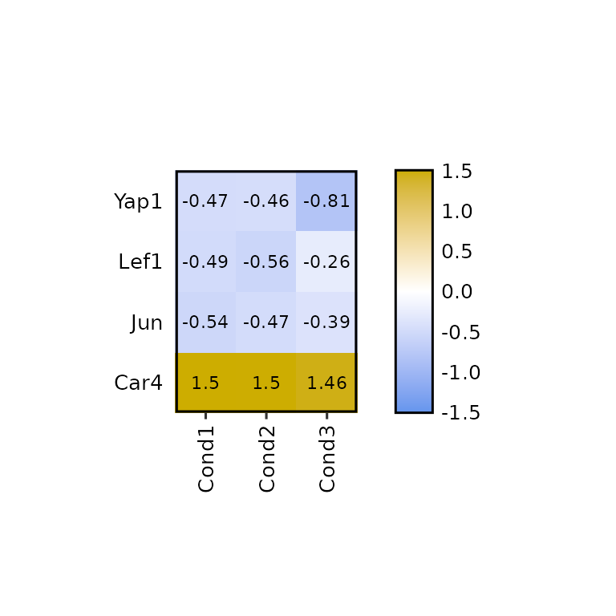
To change the legend scale, the arguments legend_scale, legend_breaks_num, legend_breaks_by and legend_midpoint can be used.
By default, legend_scale is set to c(-1.5,1.5). To set a custom scale, the legend_scale argument must be set to a numerical vector of length 2 (e.g. c(-2,5)). In such case, the argument legend_breaks_by will be used to define the distance between the breaks in the legend and the legend_midpoint argument will be set to the midpoint of the legend (passed through scale_fill_gradient2(midpoint = legend_midpoint)).
expressionHeatmap2(degs_all, genes = c("Lef1", "Jun", "Car4", "Yap1"),
legend_scale = c(-3,3), legend_breaks_by = 1, legend_midpoint = 0)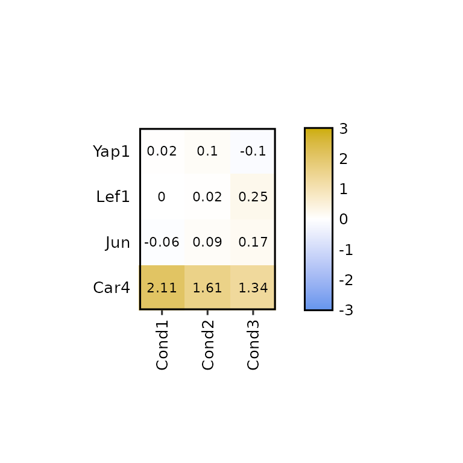
Note that the legend_midpoint value is the point where the central color is put, not necessarily the center of the legend.
expressionHeatmap2(degs_all, genes = c("Lef1", "Jun", "Car4", "Yap1"),
legend_scale = c(-3,3), legend_breaks_by = 1, legend_midpoint = 1)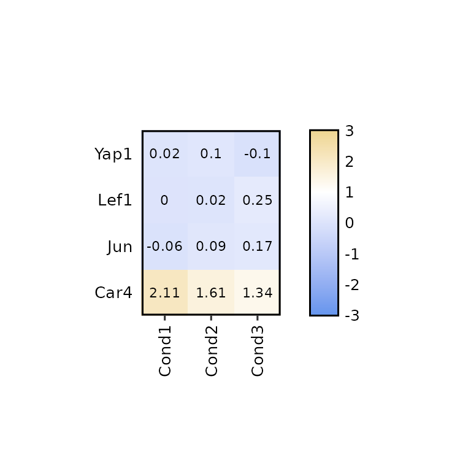
We can also set legend_scale to NULL. This will take the lowest and highest values in the input data and uses them as lower limit and higher limit of the scale. In this case, the legend midpoint is set to half the way between the lower and higher limits (legend_midpoint won’t be used).
expressionHeatmap2(degs_all, genes = c("Lef1", "Jun", "Car4", "Yap1"),
legend_scale = NULL)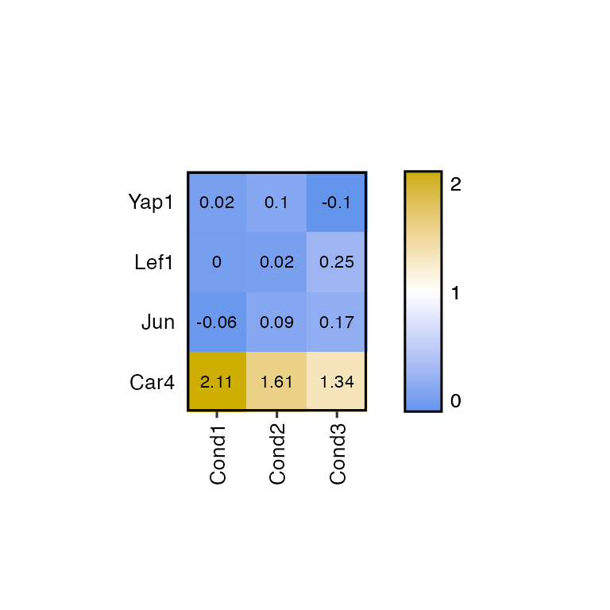
Even if legend_scale = NULL, using the argument legend_breaks_num instead of legend_breaks_by we can put as many breaks as we want. However, the breaks are rounded to the nearest integer so if our data has low values, it may happen that only few of the breaks appear. In such case, I recommend setting the legend_scale argument to a more adequate scale.
expressionHeatmap2(degs_all, genes = c("Lef1", "Jun", "Car4", "Yap1"),
legend_scale = NULL, legend_breaks_num = 1)By default, expressionHeatmap2() writes the expression values in each cell. This function can be disabled by setting the write_label to FALSE.
expressionHeatmap2(degs_all, genes = c("Lef1", "Jun", "Car4", "Yap1"), write_label = F,
legend_scale = c(-3,3))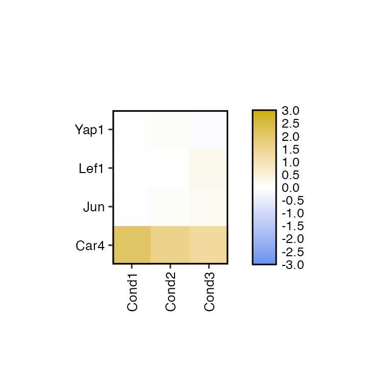
If what is needed is to change the size, or color of the written values, the arguments label_size and label_color should be changed to the desired value.
expressionHeatmap2(degs_all, genes = c("Lef1", "Jun", "Car4", "Yap1"),
legend_scale = c(-3,3), label_size = 2, label_color = "darkred")Furthermore, the number of decimals to round the expression values to can be changed using label_digits.
expressionHeatmap2(degs_all, genes = c("Lef1", "Jun", "Car4", "Yap1"), legend_scale = c(-3,3),
label_digits = 0)By default, the heatmap size is set to 10x10 mm for each cell. To change it, the arguments hm_height and hm_width must be set to the desired valuees in mm.
expressionHeatmap2(degs_all, genes = c("Lef1", "Jun", "Car4", "Yap1"), legend_scale = c(-3,3),
hm_height = 70, hm_width = 70)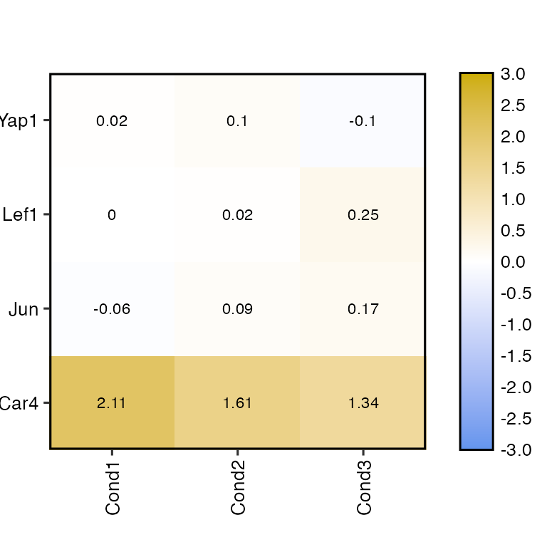
To change the colors of the heatmap, the argument hm_colors will be used. This argument accepts a character vector with 3 colors: the first color will be the lower limit color, the second will be the midpoint color and the third will be the higher limit color.
expressionHeatmap2(degs_all, genes = c("Lef1", "Jun", "Car4", "Yap1"), legend_scale = c(-3,3),
hm_colors = c("blue", "gray", "red"))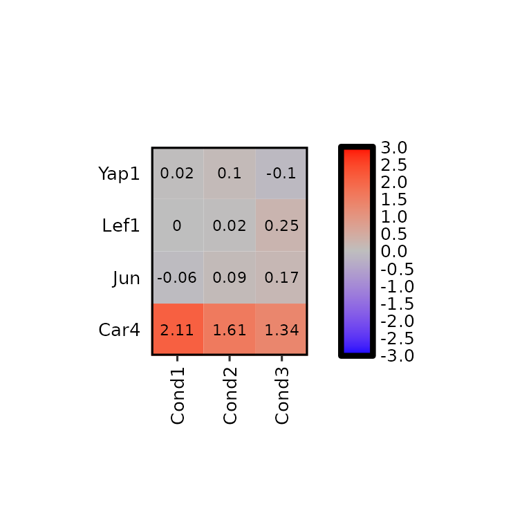
Note that if legend_midpoint value is the midpoint where the second color will be placed.
expressionHeatmap2(degs_all, genes = c("Lef1", "Jun", "Car4", "Yap1"), legend_scale = c(-3,3),
legend_midpoint = 1, legend_breaks_by = 40,
hm_colors = c("blue", "gray", "red"))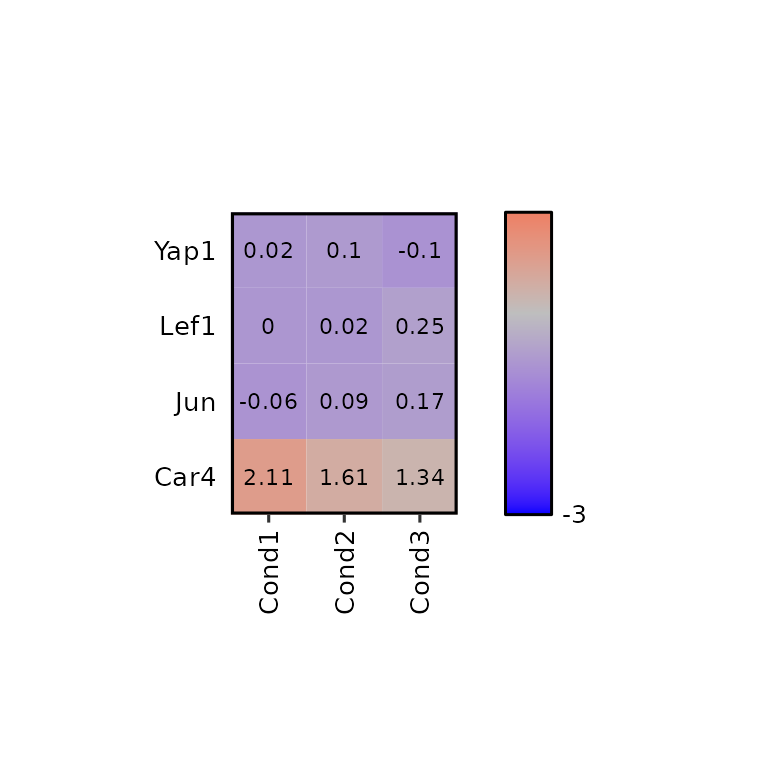
expressionHeatmap2(degs_all, genes = c("Lef1", "Jun", "Car4", "Yap1"), legend_scale = c(-3,3),
title = "This is a title", subtitle = "This is a subtitle",
caption = "This is a caption")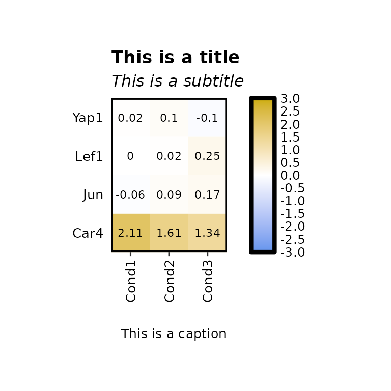
expressionHeatmap2(degs_all, genes = c("Lef1", "Jun", "Car4", "Yap1"), legend_scale = c(-3,3),
title = "This is a title", subtitle = "This is a subtitle",
caption = "This is a caption", title_hjust = .5)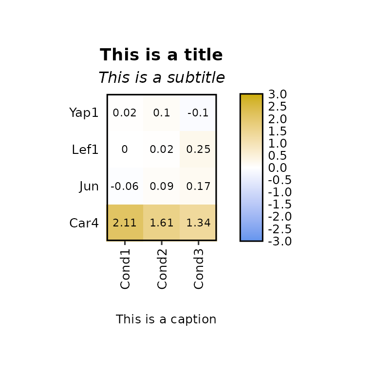
expressionHeatmap2(degs_all, genes = c("Lef1", "Jun", "Car4", "Yap1"), legend_scale = c(-3,3),
title = "This is a title", title_size = 20,
subtitle = "This is a subtitle", subtitle_size = 18,
caption = "This is a caption", caption_size = 15)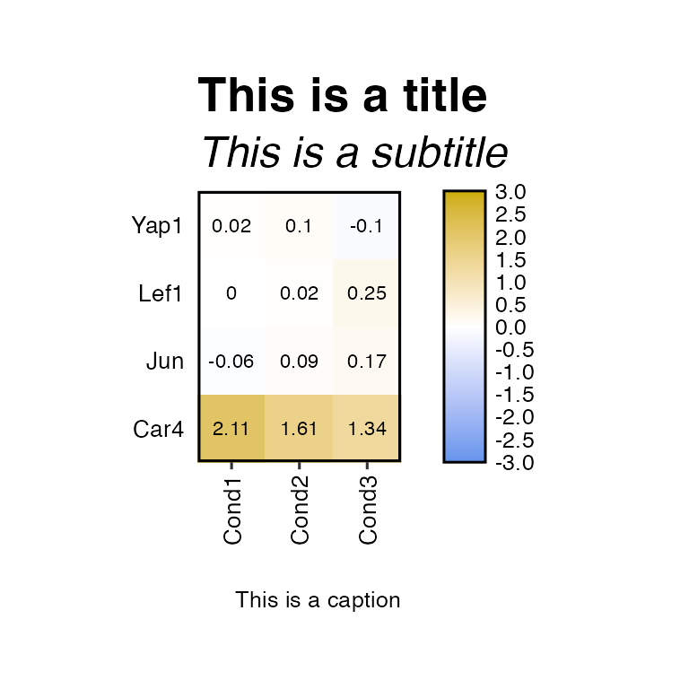
expressionHeatmap2(degs_all, genes = c("Lef1", "Jun", "Car4", "Yap1"), legend_scale = c(-3,3),
xlab = "X axis title", ylab = "Y axis title")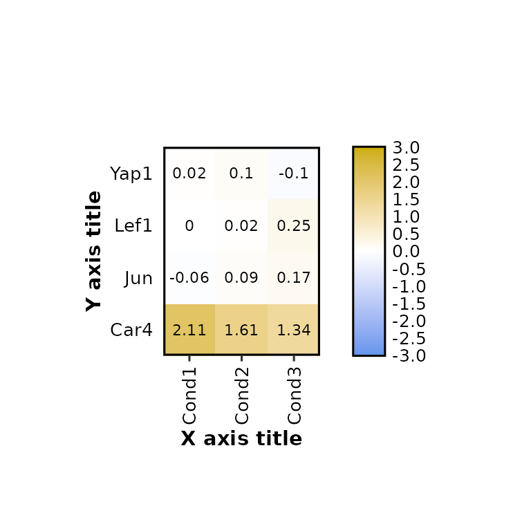
expressionHeatmap2(degs_all, genes = c("Lef1", "Jun", "Car4", "Yap1"), legend_scale = c(-3,3),
xlab = "X axis title", ylab = "Y axis title", axis_title_size = 17)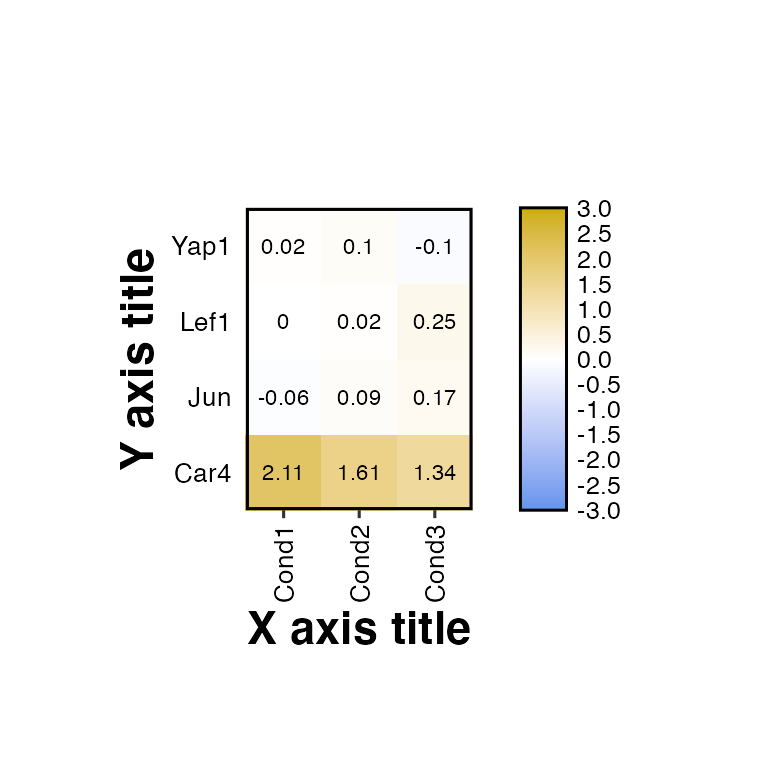
expressionHeatmap2(degs_all, genes = c("Lef1", "Jun", "Car4", "Yap1"), legend_scale = c(-3,3),
axis_text_size = 17)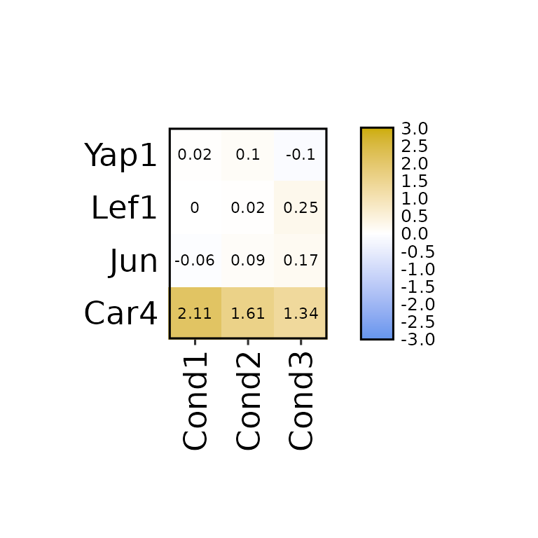
By default, the legend height is set to the same height as the heatmap, but it can be changed using the argument legend_height.
expressionHeatmap2(degs_all, genes = c("Lef1", "Jun", "Car4", "Yap1"), legend_scale = c(-3,3),
legend_height = 20)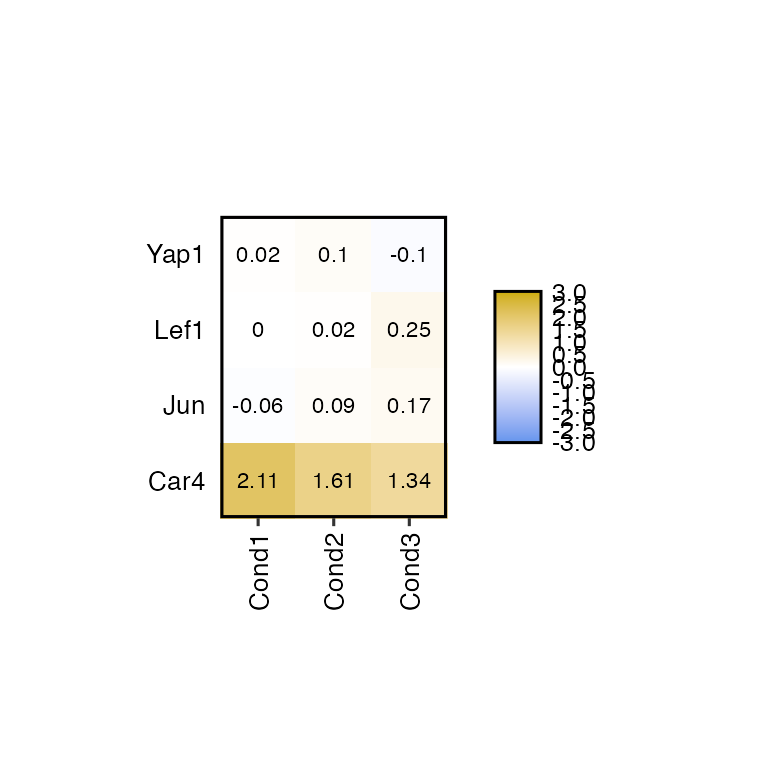
expressionHeatmap2(degs_all, genes = c("Lef1", "Jun", "Car4", "Yap1"), legend_scale = c(-3,3),
legend_title = "Legend Title")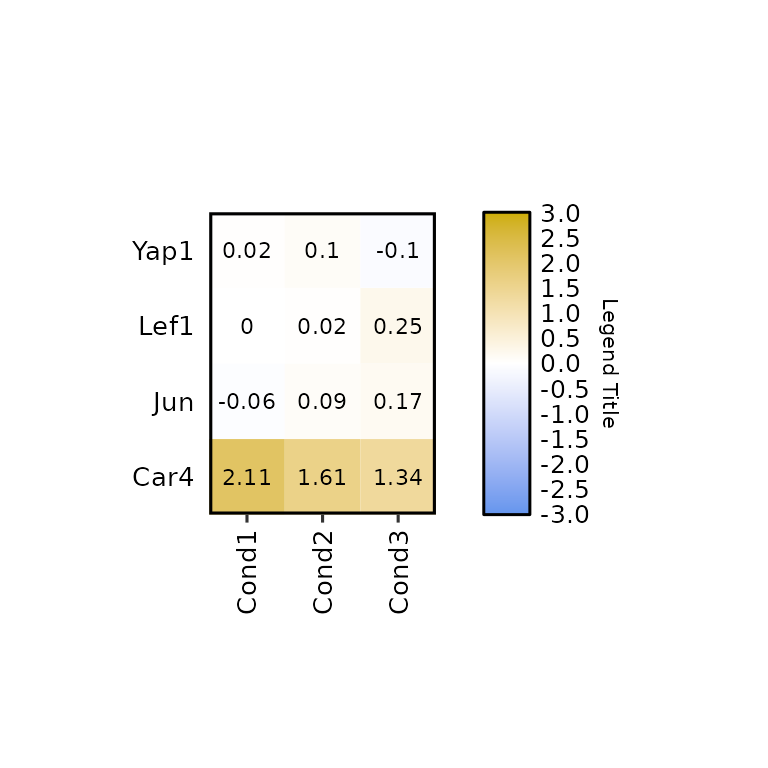
expressionHeatmap2(degs_all, genes = c("Lef1", "Jun", "Car4", "Yap1"), legend_scale = c(-3,3),
legend_title = "Legend Title", legend_title_size = 18)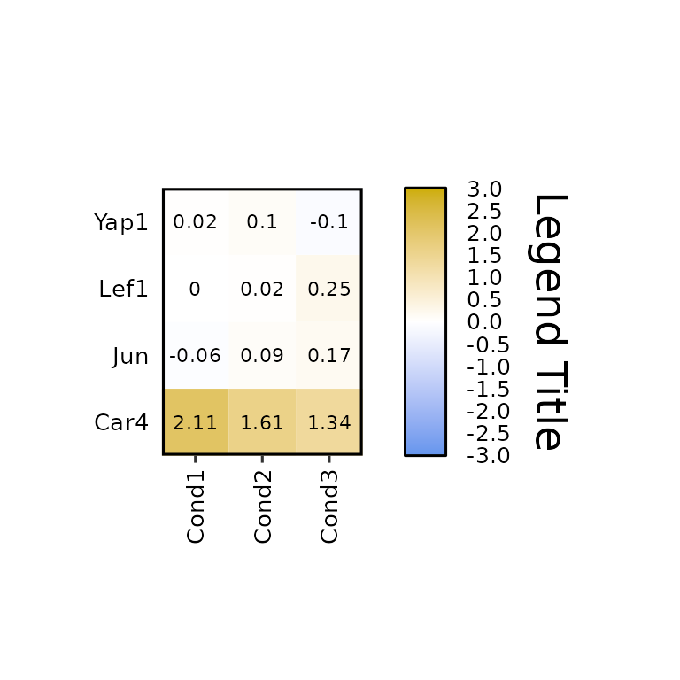
Since expressionHeatmap() outputs a ggplot2-based heatmap, it can be further customized like any other ggplot2-based plot.
If dendograms are plotted, the customization will be done as in the patchwork package.